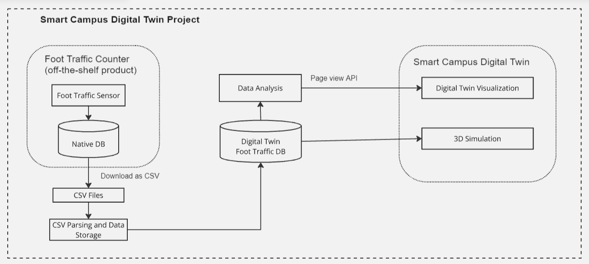
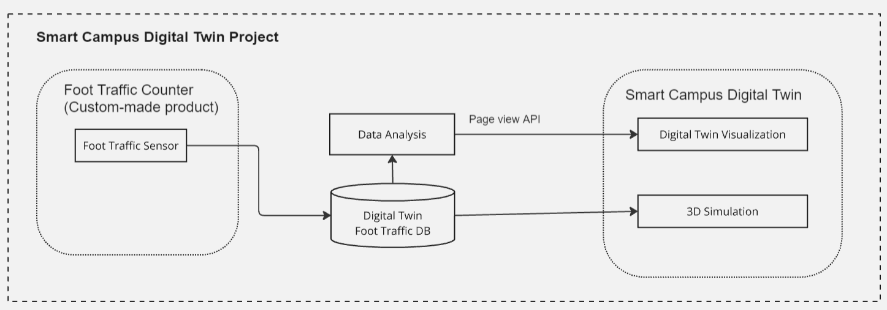
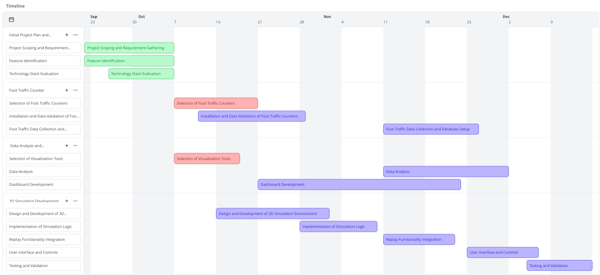
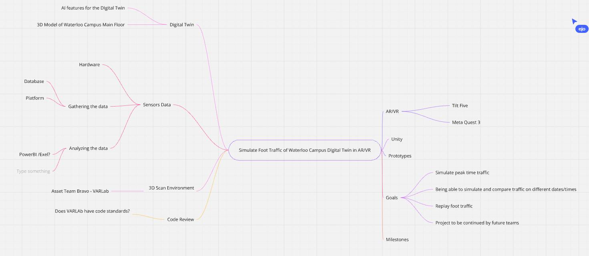

Created by Eunie, last modified on Oct 09, 2024
Team | Alice Nguyen (anguyen3@conestogac.on.ca) Ashish Gyawali (agyawali@conestogac.on.ca) Eunie Jo (ejo@conestogac.on.ca) Justin Dookhran (jdookhran@conestogac.on.ca) |
Objective | Project Objective
The Smart Campus Digital Twin project aims to collect real-time foot traffic data using motion sensors installed throughout the college campus. The data will be analyzed to derive valuable insights and visualized through 3D simulations, which will be utilized to assess infrastructure usage, identify congestion zones, and track movement patterns. Project Description
Motion sensors placed in various areas of the campus capture real-time movement data. This data is processed to track foot traffic counts and movement paths, allowing the identification of traffic patterns at specific times and locations. The analysis will support efficient decision-making across various areas, including facility optimization, congestion management, and safety improvements. |
Due date | 12/13/2024 |
Key outcomes | [Key Objectives] Real-time foot traffic data collection: Implement a system that collects, stores, and analyzes real-time data from installed motion sensors. 3D simulation and visualization: Use Unity to visualize the collected data in real-time and provide a traffic simulation within a virtual environment. Insight generation through data analysis: Analyze traffic patterns to propose optimization strategies for space utilization and facility management.
[Expected Benefits] Facility management optimization: Identify peak traffic times and locations to improve infrastructure efficiency. Enhanced safety: Analyze congestion levels in specific areas to strengthen safety measures. Resource allocation efficiency: Use traffic pattern analysis to inform optimal resource placement and operations.
|
Status | IN PROGRESS |
 System Architecture Diagram
System Architecture Diagram
https://miro.com/welcomeonboard/cWhGTXg2QjNQTHRsMEJsQzNtTGNwSmFzQWpUeXpTTlZwOWNKamZMMG1KckZObnpCTTUxMFZ4SHFrNTRacDN2NXwzNDU4NzY0NjAwOTkwNzc3NDEwfDI=?share_link_id=503743895016
[Plan 1]
[Plan 2]
Decisions to be MadeThe following decisions will determine the required technologies and tools: Foot Traffic Counter: A decision must be made regarding which sensor to use. Option 1: Use an off-the-shelf product that provides an API to access its database. Option 2: Use an off-the-shelf product that does not provide an API but allows sensor data to be downloaded. Option 3: Build a custom foot traffic counter in-house.
Database : InfluxDB Option1: Building Server Option2: Existed Server
Data Analysis Tool: A decision must be made on how to analyze the data. 3D Simulation: A decision must be made regarding the 3D simulation platform.
|
|---|
 System Requirements
System Requirements
Functional Requirements | Real-time foot traffic data collection: The system must collect real-time foot traffic data from the installed motion sensors and store it in a database. 3D visualization: The system should visualize the collected data in real-time using Unity, providing a simulation of traffic flow. Dashboard provision: Users must be able to view real-time data and easily interpret analysis results through dashboards implemented using Power BI or Grafana. Data analysis algorithms: The system must implement algorithms to calculate foot traffic counts, movement paths, and congestion levels. Machine learning techniques should be used to predict potential patterns.
|
Non-functional Requirements | Performance: Real-time data collection and processing must be completed within 1 second, ensuring the system meets real-time requirements. Security: Collected data must be encrypted during transmission and storage, with access restricted to authorized users only. Scalability: The system must maintain performance levels even with the addition of new sensors and data collection devices, with an architecture designed to accommodate increased data processing demands.
|
Technical Requirements | Required Technology Stack
Sensors and hardware: Motion sensors and data collection devices, or pre-built foot traffic counters. Database: A database for storing and processing data (e.g., InfluxDB, MySQL). Data analysis tools: Tools such as Power BI, Python, and Grafana for data analysis. 3D simulation: Unity engine for 3D visualization, integrated with Tilt Five.
Infrastructure Requirements
|
 Timeline
Timeline
https://miro.com/welcomeonboard/OUxobzVlSWN3M2x0T1g2WE5BeDRrZlVtdFZlQ2dHb2hqME83djRmV3NLcXp0eE5oMURkbVNSSmkwR1dsQm1raHwzNDU4NzY0NjAwOTkwNzc3NDEwfDI=?share_link_id=897494712220

 Milestones and deadlines
Milestones and deadlines

Milestone | Task | Owner | Deadline | Status |
|---|
Initial Project Plan and Roadmap Development | | | 10/04/2024 | IN PROGRESS |
| Project Scoping and Requirement Gathering | | | |
| Feature Identification | | | |
| Technology Stack Evaluation | | | |
Foot Traffic Counter | | | | TO DO |
| Selection of Foot Traffic Counters | | | |
| Installation and Data Validation of Foot Traffic Counters | | | |
| Foot Traffic Data Collection and Database Setup | | | |
Data Analysis and Visualization | | | | TO DO |
| Selection of Visualization Tools | | | |
| Data Analysis | | | |
| Dashboard Development | | | |
3D Simulation Development | | | | TO DO |
| Design and Development of 3D Simulation Environment | | | |
| Implementation of Simulation Logic | | | |
| Replay Functionality Integration | | | |
| User Interface and Controls | | | |
| Testing and Validation | | | |
Completion & Wrap-Up | | | | TO DO |
| Documentation | | | |
| Final Deliverables Sharing | | | |
 Reference materials
Reference materials
{kind=link}
{kind=link}
{kind=link}
{kind=link}
{kind=link}
{kind=link}